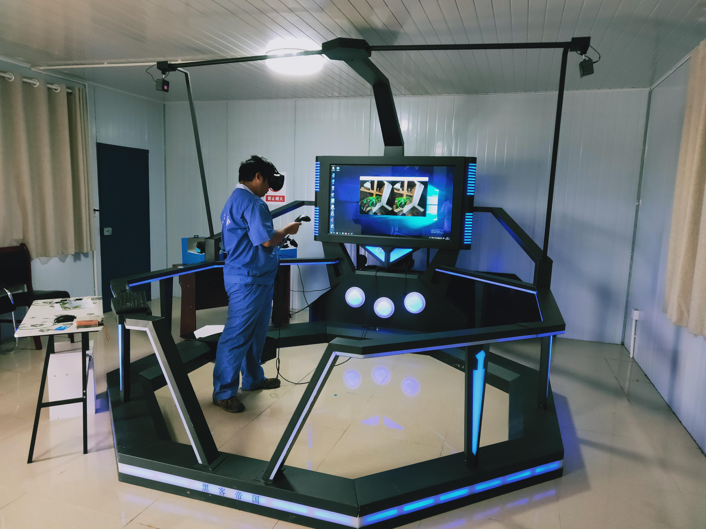
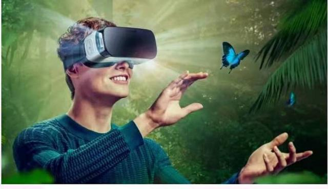
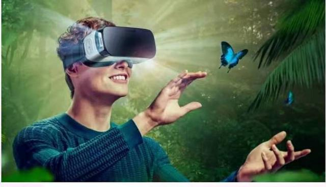

历史发展
1、第一阶段（1963年以前）有声形动态的模拟是蕴涵虚拟现实思想的阶段
1929年，Edward Link设计出用于训练飞行员的模拟器；1956年，Morton Heilig开发出多通道仿真体验系统Sensorama。
2、第二阶段（1963—1972）虚拟现实萌芽阶段
1965年，Ivan Sutherland发表论文“UltimateDisplay”（终极的显示）；1968年，Ivan Sutherland研制成功了带跟踪器的头盔式立体显示器（HMD）；1972年，NolanBushell开发出第一个交互式电子游戏Pong。
3、第三阶段（1973—1989）虚拟现实概念的产生和理论初步形成阶段
1977年，Dan Sandin等研制出数据手套SayreGlove；1984年，NASA AMES研究中心开发出用于火星探测的虚拟环境视觉显示器；1984年，VPL公司的JaronLanier首次提出“虚拟现实”的概念；1987年，JimHumphries设计了双目全方位监视器（BOOM）的最早原型。
4、第四阶段（1990年至今）虚拟现实理论进一步的完善和应用阶段
1990年，提出VR技术包括三维图形生成技术、多传感器交互技术和高分辨率显示技术；VPL公司开发出第一套传感手套“DataGloves”，第一套HMD“EyePhoncs”；21世纪以来，VR技术高速发展，软件开发系统不断完善，有代表性的如MultiGen Vega、Open Scene Graph、Virtools等。


